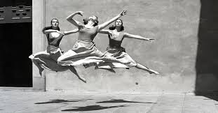
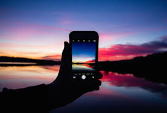
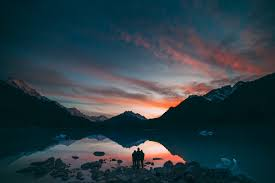

Cindy Sherman (January 19,1954) is an American conceptual artist. She is widely recognized as one of the most influential artists in the modern age of photography. She is a photographer, model, hairdresser, stylist and makeup artist.
Imogen Cunningham(April 12,1883-June 23,1976) was an American photographer known for her botanical photography,nudes and industrial landscapes.


A large variety of photographic techniques and media are used in the process of capturing images for photography. These include the camera; stereoscopy; dualphotography;full-spectrum, ultraviolet and infrared media; light field photography; and other imaging techniques.
The camera is the image-forming device, and a photographic plate,photographic film or a silicon electronic image sensor is the capture medium.Photographers control the camera and lens to "expose" the light recording material to the required amount of light to form a "latent image" (on plate or film) or RAW file (in digital cameras) which, after appropriate processing, is converted to a usable image. Digital cameras use an electronic image sensor based on light-sensitive electronics such as charge-coupled device (CCD) or complementary metal-oxide-semiconductor (CMOS) technology. The resulting digital image is stored electronically, but can be reproduced on a paper.
Photographs, both monochrome an color, can be captured and displayed through two side-by-side images that emulate human stereoscopic vision. Stereoscopic photography was the first that captured figures in motion.
Dualphotography consists of photographing a scene from both sides of a photographic device at once (e.g. camera for back-to-back dualphotography, or two networked cameras for portal-plane dualphotography).
Ultraviolet and infrared films have been available for many decades and employed in a variety of photographic avenues since the 1960s. New technological trends in digital photography have opened a new direction in full spectrum photography, where careful filtering choices across the ultraviolet, visible and infrared lead to new artistic visions.
Digital methods of image capture and display processing have enabled the new technology of "light field photography" (also known as synthetic aperture photography). This process allows focusing at various depths of field to be selected after the photograph has been captured.[40] As explained by Michael Faraday in 1846, the "light field" is understood as 5-dimensional, with each point in 3-D space having attributes of two more angles that define the direction of each ray passing through that point.

An amateur photographer is one who practices photography as a hobby/passion and not necessarily for profit. The quality of some amateur work is comparable to that of many professionals and may be highly specialized or eclectic in choice of subjects.Amateur photography grew during the late 19th century due to the popularization of the hand-held camera.[41] Nowadays it has spread widely through social media and is carried out throughout different platforms and equipment, switching to the use of cell phone.
Commercial photography is probably best defined as any photography for which the photographer is paid for images rather than works of art. In this light, money could be paid for the subject of the photograph or the photograph itself. The examples of commercial are advertising photography,fashion and glamour photography,360 product photography,concert photography,crime scene photography,still life photography,food photography editorial photography,portrait and wedding photography,landscape photography,wildlife photography and pet photography.
During the 20th century, both fine art photography and documentary photography became accepted by the English-speaking art world and the gallery system. In the United States, a handful of photographers, including Alfred Stieglitz, Edward Steichen, John Szarkowski, F. Holland Day, and Edward Weston, spent their lives advocating for photography as a fine art.
Photojournalism is a particular form of photography (the collecting, editing, and presenting of news material for publication or broadcast) that employs images in order to tell a news story. It is now usually understood to refer only to still images, but in some cases the term also refers to video used in broadcast journalism.
The camera has a long and distinguished history as a means of recording scientific phenomena from the first use by Daguerre and Fox-Talbot, such as astronomical events (eclipses for example), small creatures and plants when the camera was attached to the eyepiece of microscopes (in photomicroscopy) and for macro photography of larger specimens.Science uses image technology that has derived from the design of the Pin Hole camera. X-Ray machines are similar in design to Pin Hole cameras with high-grade filters and laser radiation.[49] Photography has become universal in recording events and data in science and engineering, and at crime scenes or accident scenes. The method has been much extended by using other wavelengths, such as infrared photography and ultraviolet photography, as well as spectroscopy. Those methods were first used in the Victorian era and improved much further since that time.
 
Social and Cultural Implications